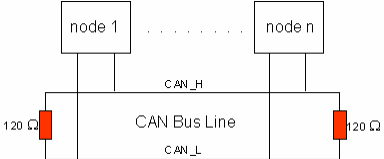
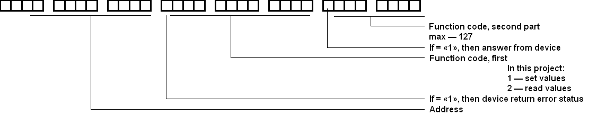

CAN bus
A Controller Area Network (CAN bus) is a vehicle bus standard designed to allow microcontrollers and devices to communicate with each other in applications without a host computer. It is a message-based protocol, designed originally for multiplex electrical wiring within automobiles, but is also used in many other contexts.
Architecture
CAN is a multi-master serial bus standard for connecting Electronic Control Units [ECUs] also known as nodes. Two or more nodes are required on the CAN network to communicate. The complexity of the node can range from a simple I/O device up to an embedded computer with a CAN interface and sophisticated software. The node may also be a gateway allowing a standard computer to communicate over a USB or Ethernet port to the devices on a CAN network.

All nodes are connected to each other through a two wire bus. The wires are 120 Ω nominal twisted pair.
To work with CAN suitable twisted pair category 5e. For example CAN-L - orange light; CAN-H - orange dark. Other wires can use for power suplay ( 24V ).
For communicate between modules i'm use extended frame format. The description details of format see below.
About Maximum Cable Length For a CAN Bus you can read this: ni.com
Maximum device ( modules ) on CAN bus = 100. Limit of CAN-chip thereof project.

The device always responds to the packets addressed to him. This is a confirmation of the receipt of package.
Address = 0 - broadcast ( for auto-configure and set can address of device ).
In ”Download” section present firmware ”CAN_Gate”. You can use this firmware for work main board with CAN bus as bridge ( virtual COM port <-> CAN bus )
Connect USB<->UART converter to X1.3; X1.4 main board.
Example of converter: USB-UART.PDF